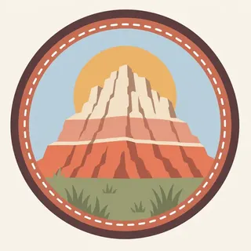

01
Mixed-grass prairie
The nature page calls the prairie a transitional zone between tall-grass and short-grass. It is the living half of a park people often remember only for the rock.
TrailMark Archive Edition
South Dakota | White River
A monument in 1939, a national park in 1978, on rock that started eroding half a million years ago.
Archive No. TM-BADL-029
National Park since 1978
Collection White River Badlands
Park Overview
Badlands National Park protects more than 240,000 acres of buttes, pinnacles, and spires in southwestern South Dakota, wrapped in mixed-grass prairie.
The nature page says 244,000 acres. The Geodiversity Atlas says 242,756. There is no park statistics page to choose between them, so the shared figure is more than 240,000 acres. The prairie is the transition between tall-grass to the east and short-grass to the west. The rocks were deposited as early as 75 million years ago and began eroding about 500,000 years ago.
The NPS Geodiversity Atlas gives the legal sequence the nature page does not: paleontology was a reason for making Badlands a national monument in 1939, for adding acreage in 1976, and for elevating the monument to a national park in 1978. The day of that 1978 redesignation is not on the atlas page, so this essay uses the year.
Emotional Thesis
The header is a prairie in the foreground and a wall of banded buttes behind it. That is the nature page's order: grass first, then the cut rock, then the fossils the erosion is uncovering.
Lakota people have long called this country mako sica. An NPS naming article says that phrase translates as bad lands, and that French trappers said les mauvaises terres a traveser. The harsh name is about travel, especially wet clay, not about a place without a story.
Landscape Highlights
01
The nature page calls the prairie a transitional zone between tall-grass and short-grass. It is the living half of a park people often remember only for the rock.
02
Sharply eroded buttes, pinnacles, and spires are the nature page's landform list. Deposition built the rock. Erosion, still going, cuts it. Fossils appear as the cut deepens.
03
The Geodiversity Atlas says the White River Badlands are the type locality for this kind of intricately eroded topography. The name on the collection line is that geologic name, not a river mileage.
Wildlife
The nature page says wildlife runs from bison to butterflies and everything between. It does not print a population in that sentence.
01
The extra drawing is one bighorn on a striped ledge. Treat it as a painting. The nature page did not hand this essay a sheep count.
02
Bison are named, with their own article. They are not a number in the overview.
03
The prairie portal is the place for grasses and forbs. This page stays with the mixed-grass description rather than inventing a species list.
Geology
The Geodiversity Atlas says the strata record about 75 million years, from marine and near-shore settings into terrestrial ones, and that the park holds the world's richest collection of Oligocene vertebrate fossils.
01
More than 250 vertebrate species are represented, herbivores and carnivores. The atlas also says more than 50 herbivore species and 14 carnivore species are known from the Eocene and Oligocene White River Group, mostly in the Brule Formation.
02
Oligocene animals here ranged from rodents to elephant-size titanotheres. The atlas says fossil beds of the White River Group preserve nearly twice as many mammalian families as are known today for all of North America.
03
The nature page's erosion start, about 500,000 years ago, is the cut you see. The atlas says those same processes are still exposing fossils.
The naming article says wet clay becomes slick and sticky and hard to cross. That is the practical meaning of mako sica. A storm changes the ground, not only the sky.
The header uses a low sun on the bands. Color is real. Heat, storms, and road status are on the NPS page for the week you go.
This essay does not invent a snowfall total. The prairie and the buttes are both still there. What is open is a current NPS question.
Erosion does not take a season off. Finding a fossil is not finding a souvenir. The atlas points to the Paleontological Resources Preservation Act.
Photography
A frame of only pink rock misses the mixed-grass half of the park.
01
The color changes are beds, not a filter. Let a few layers stay readable.
02
A person-less butte can look like a model. The prairie in front gives the height.
03
Photograph them in place. The park's fossil rules are the limit, and they are federal.
Field Notes
The grass is the living park. The stripes are the cut that shows what the grass replaced.
TrailMark Field Notes

Badge Story
The mark is horizontal beds chopped into spires, with grass at the base. A river gorge would be a different park.
Stripes, a spire, and a grass line.
A bison or a bighorn can be the animal. Neither stands for a count.
Do not reuse the Black Canyon wall. These beds are soft and young by comparison.
Archive No.029
LocationWhite River
ReleasePrairie Mark
Stewardship / Safety
Erosion is the scenery and the hazard. Fossils are protected. The south side of the story runs through Pine Ridge.
Do not collect fossils, rocks, or plants. The atlas cites the Paleontological Resources Preservation Act.
Wet clay is the naming article's warning. A trail that looked firm can turn slick.
The history index treats the aerial gunnery range and the Dawes Act as park history. Read them before treating the whole boundary as one kind of public land.
Road closures and wildlife distance are current NPS notices.
Current conditions, fees, and alerts are on the National Park Service site.
Continue the Archive
This page stays with the White River beds. Wind Cave, nearby, is still unpublished here. Rocky Mountain is the alpine contrast already on the shelf.